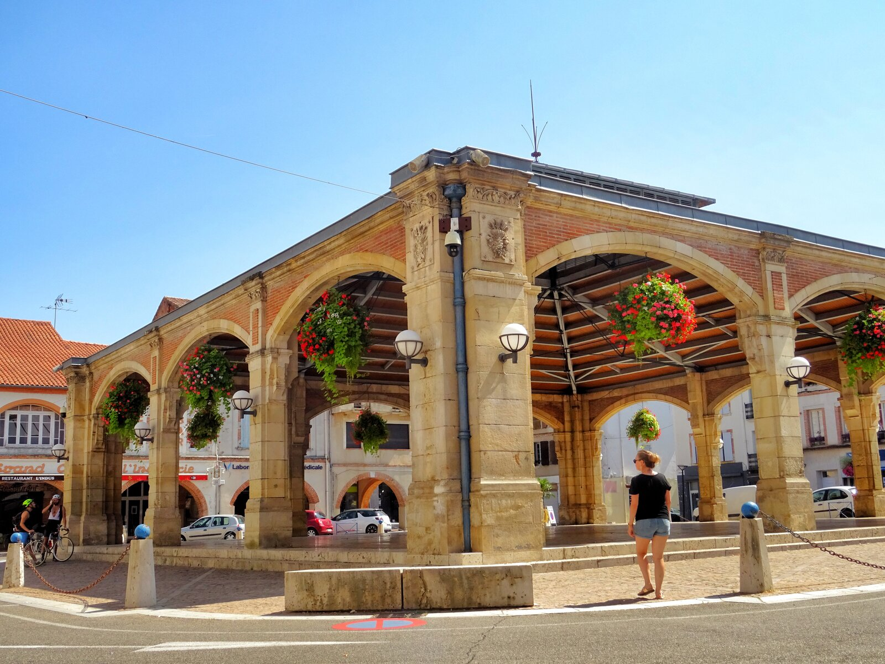

🔍 Cherchez le chiffre caché !
Défi : Trouvez le chiffre 10 et cliquez dessus
📖 Découverte du patrimoine
Lisez attentivement les trois textes ci-dessous. Le chiffre 10 est caché quelque part dans l'un d'eux !
🏛️ Le Lavoir ancien

C'est le plus ancien des trois lavoirs de la ville. Dès 1661, la fontaine fit l'objet de réparations
de la part des consuls et une pierre gravée de leurs noms et des armoiries du seigneur marquis de
Valence fut érigée au-dessus de la fontaine. En 1880, le mauvais état du lavoir nécessita des
réparations, le Conseil Municipal de l'époque décida notamment qu'il devait être carrelé.
🏰 La Place Nationale

Cette place carrée, entourée primitivement de maisons à ambans était le cœur de la bastide. En son
centre fut construite la maison commune entourée elle-même d'ambans sous lesquels les marchands
étalaient leurs marchandises les jours de marchés.
⛲ Les Allées des Fontaines

C'est sur l'emplacement des anciens fossés de la ville que l'on établit la belle promenade des
fontaines.
10
Pour y accéder plus commodément, on perça une quatrième porte de ville à proximité de la place
centrale, à l'extrémité de la rue qui, depuis lors, a toujours porté le nom de Porte-Neuve.
Conseils pour réussir
Lecture attentive : Prenez le temps de lire chaque texte en entier
Observation visuelle : Le chiffre 10 se distingue du reste du texte
Survol à la souris : Passez la souris sur les zones de texte pour détecter les
liens
Changement de curseur : Le curseur devient une main pointeuse sur le lien cliquable
Clic précis : Une fois le 10 trouvé, cliquez dessus pour continuer